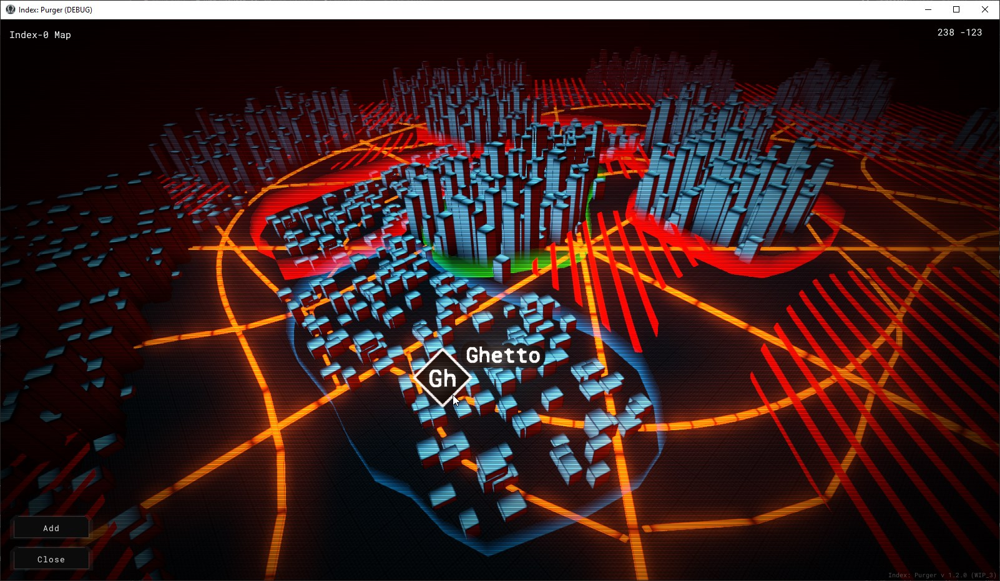

Module: game_map
Documentation last edited: November 17, 2025 at 9:00 UTC
Description

What can turn this game into something more open-world rather than this game map?
GameMap
singleton
It allows you to get certain control easily.
# Opens the game map, shows the "world" waypoints group, "true" means it can be closed
GameMap.open("world", true)
# Unlocks a waypoint in the "world" group
GameMap.unlock_waypoint("world", "ghetto")
# Locks a waypoint in the "world" group
GameMap.lock_waypoint("world", "ghetto")
You can also use
"st_game_map_open"
,
"st_game_map_unlock_waypoint"
,
"game_map_lock_waypoint"
.
Structure
Mainly this thing consists of several parts located in
"res://modules/game_map/assets/prefabs/"
.
"map_geometry"
- this is the map's geometry that is shown in the game map interface.
"map_viewport"
- simply puts the map geometry into
Viewport
to render it later.
"map_interface"
- this is the core of this entire system, it implements all the logic related to controls and general system's behavior.
"map_waypoint"
- implements a waypoint.
"game_map"
- this is the
GameMap
singleton.
It's pretty simple, if you want to know more - take a look into implementation of
"map_interface"
.
General Information
Root directories list
assets, docs, src
Nodes
GameMap
GameMapGeometry
map_interface
Classes
None
Resources
Other Scripts
None